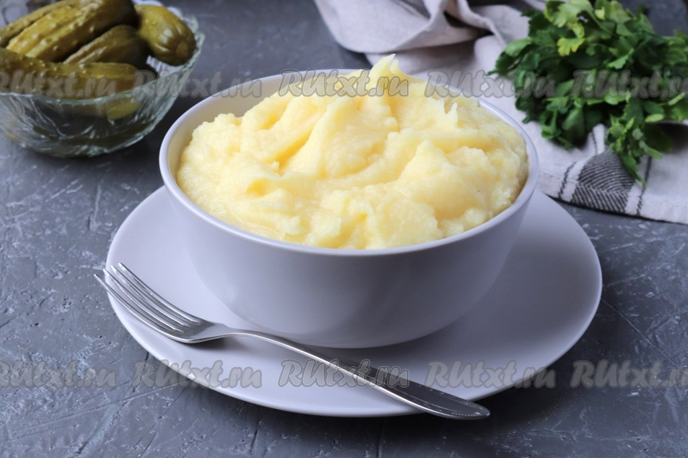

|  |
РецептДля приготовления картофельного пюре с яйцом и молоком понадобится: картофель - 1,5 кг яйцо куриное - 1 шт молоко - 200 мл сливочное масло - 70 г соль - по вкусу |
Этапы приготовления✔ Картофель очистим и тщательно помоем под проточной водой. Если клубни слишком крупные - разрежем их на 4 части, чтобы они быстрее сварились. ✔ Переложим картофель в кастрюлю и полностью зальем чистой фильтрованной водой ✔ Отправим на огонь и доведём до кипения. После чего аккуратно снимем образовавшуюся пену и посолим по вкусу ✔ Отварим картофель до готовности под крышкой на среднем огне. Время приготовления будет зависеть от сорта, примерно, на это уйдёт 25 минут. После чего сольём жидкость из кастрюли, в дальнейшем она нам не понадобится ✔ Тёплое молоко и сливочное масло добавим к отварному картофелю ✔ Воспользуемся толкушкой и разомнём картофель в пюре ✔ Сырое куриное яйцо разобьем в отдельную ёмкость, убедимся в его свежести, после чего добавим в пюре ✔ Снова перемешаем. Чтобы пюре получилось пышным и однородным, можно воспользоваться миксером ✔ Вот и всё, вкуснейшее картофельное пюре с яйцом и молоком готово. Разложим по порционным тарелкам и в горячем виде подадим на стол
❤ Приятного аппетита ❤Просмотри рецепт на сайте! |